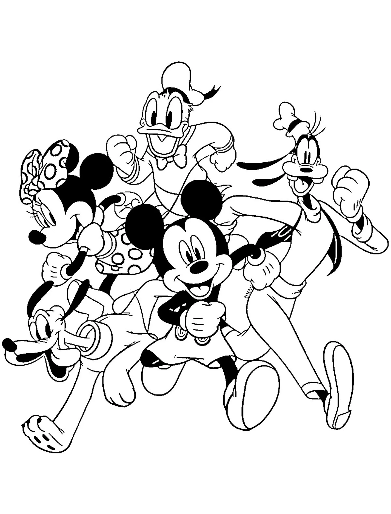

Hi, I'm Kasi Meka. A Python, ETL Developer and Backend Engineer with over 4 years of experience specializing in backend development, data engineering, ETL pipelines, and cloud platforms (AWS, Azure, GCP). I have proven expertise in designing data pipelines, ETL/ELT processes, and scalable backend APIs using frameworks like FastAPI, Flask, and Django.
I am highly experienced in integrating Generative AI (GenAI) and Large Language Models (LLMs) into enterprise applications for chatbot evaluation, automation, and intelligent data workflows. I thrive in collaborative, Agile environments and am actively seeking an opportunity where I can contribute to innovative, data-driven projects.
"
Professional Experience
ETL Developer
Walt Disney | Orlando, Florida
June 2026 – Present

Technologies Handled
•Developed and managed a multi-tiered Snowflake architecture (Base, Application Data, Consumption, and Presentation layers) to transform raw platform data into user-ready analytics views.
•Built and refined a metadata-driven Python framework to standardize complex marketing campaign strings using Regex lookups and automated string parsing.
•Implemented a centralized ERRORS process to manage manual overrides and handle data exceptions, applying corrections directly to master data when standard Regex logic is insufficient.
•Replaced manual view workarounds by engineering an automated schema evolution process that dynamically executes ALTER TABLE operations on locked historical snapshots, ensuring seamless UNION ALL execution between legacy and live datasets.
•Standardized mismatched database column names while actively retaining legacy columns and executing data migration scripts to prevent breaking downstream reporting.
•Managed automated data ingestion via API and Globalscape (FTP), utilizing metadata-driven Python processes to validate file structures and ensure data quality before loading into Snowflake.
•Proposed and designed a 'Magnitude of Change Dashboard' powered by taxonomy history tables to provide stakeholders with self-service visibility into dimension changes over time.
•Actively participated in weekly taxonomy syncs, sprint planning, and architecture review meetings to review technical flow diagrams, mapping documents, and system designs.
Senior Python Developer
Cigna Health Care | Plano, TX
June 2024 – June 2026
Technologies Handled
•Developed Python services integrating Generative AI APIs to automate chatbot response evaluation.
•Designed backend data workflows using Python and SQL to support scalable analytics.
•Implemented automated LLM-based evaluation pipelines to assess chatbot response quality.
•Managed AWS cloud infrastructure using VPC, EC2, ECS, S3, and CloudFormation.
•Developed ETL pipelines from S3 to Snowflake using Python.
•Built APIs using FastAPI and Hug frameworks for cross-functional data sharing.
•Improved project code coverage to over 90% using automated unit testing.
•Built Airflow data pipelines in GCP for enterprise ETL jobs.
•Containerized applications using Docker and deployed via Jenkins CI/CD pipelines.
Python Developer
Hindustan Aeronautics Limited (HAL) | Bangalore, India
Aug 2023 – Dec 2023
Technologies Handled
•Developed sensor logic using Python scripts and Unix shell scripting.
•Built Python batch processors to consume and produce various feeds.
•Processed massive Blob datasets using PySpark Map-Reduce.
•Wrote cleaning and munging scripts for large-scale datasets.
Python Developer
Cognizant (Client: MERCK) | Hyderabad, India
June 2021 - Jul 2023
Technologies Handled
•Managed automated data workflows using Python, SQL, and R.
•Developed pandas scripts for complex CSV data manipulation and comparison.
•Built a Django-based GUI for dynamic code documentation display.
•Executed long-term technological fixes for data and system bottlenecks.
Education
Master's in Information Science
University of North Texas | Denton, TX
2024 - 2025
Licenses & Certifications
Claude 101
Anthropic Education
Claude Code in Action
Anthropic Education
Building with the Claude API
Anthropic Education
Building customized LLMs with OpenAI
Columbia University
Technical Expertise
* Click a skill to pop it! *
Languages
PythonSQLRJavaJavaScriptTypeScript
GenAI & Data
LLMsLangChainETL/ELTPySparkSnowflakePandas
Cloud & DevOps
AWSGCPAzureDockerGitFastAPIAirflowJenkins
Featured Research & Projects
GenAI
AI-Powered PDF Assistant (RAG)
Built a Retrieval-Augmented Generation (RAG) script to chat with local PDF documents.
ML
Automated Resume Parsing API
Designed a scalable REST API using NLP models to extract key entities from unstructured resume PDFs.
ML
Automated Image Captioning Engine
Implemented an ML script leveraging pre-trained vision-language models to automatically caption images.
Data Viz
ODI Cricket Analytics Dashboard
Utilized Pandas to preprocess match data before designing interactive dashboards uncovering 20 years of trends.
Data Viz
LA Crime Pattern Analysis
Extracted and cleaned crime datasets using Python to analyze graphical trends across Los Angeles.
Lund, B., Orhan, Z., Mannuru, N. R., Bevara, R. V. K., Porter, B., Vinaih, M. K., & Bhaskara, P. (2025). Standards, frameworks, and legislation for artificial intelligence (AI) transparency. AI and Ethics, 5(4), 3639-3655.
Beat the AI 🤖
Predictive Rock-Paper-Scissors
This bot uses a simple Markov Chain algorithm to learn your patterns and predict your next move.